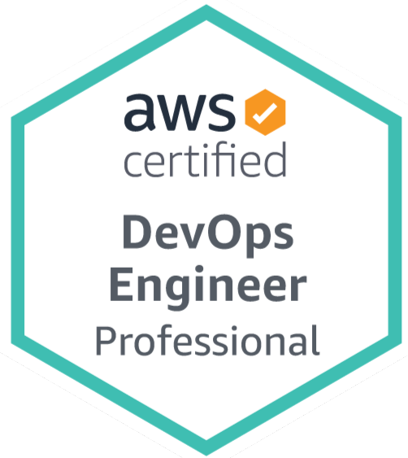
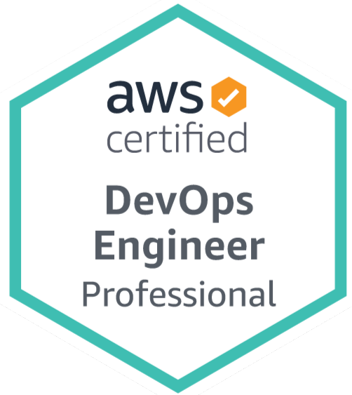

AWS
Certified DevOps Professional (DOP-C02)
- Automated Infrastructure: Used AWS CloudFormation to automate the setup and management of cloud infrastructure, improving consistency and scalability.
- CI/CD Pipeline Setup: Built and managed CI/CD pipelines with AWS CodePipeline, CodeBuild, and CodeDeploy to streamline software delivery.
- Monitoring and Management: Utilized AWS CloudWatch for monitoring and logging, ensuring reliable and efficient system performance.